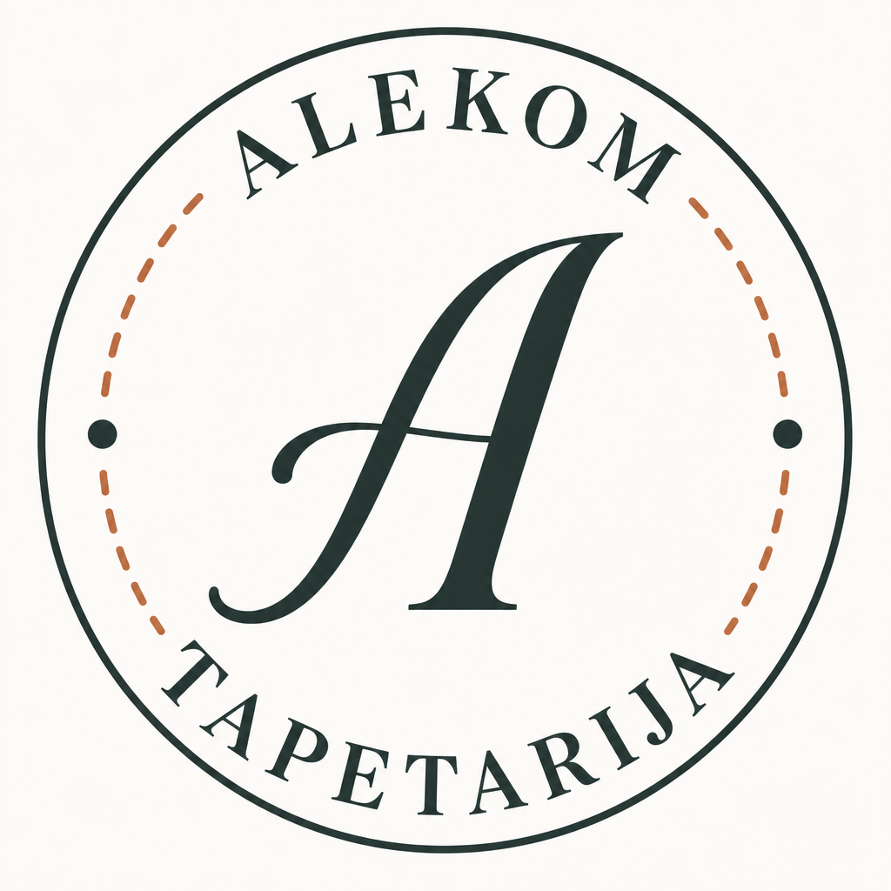
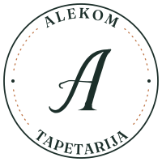
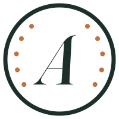
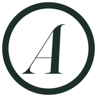
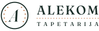
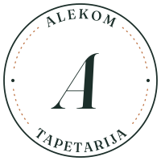

PNG original (generisan)Slova nisu trasirana iz PNG-a. Krive su izvučene iz Fraunces fonta i svaki glif je pojedinačno pozicioniran i rotiran po luku, pa logo ne zavisi od prisustva fonta na sistemu. Ukupno 21 kriva, bez rasterskih delova.

PNG original (generisan)
Rekonstruisani SVGZadržani su svi elementi originala: spoljašnji prsten, ALEKOM po gornjem luku, TAPETARIJA po donjem, kurzivni monogram A, bakarni isprekidani šav i dve tačke na 3 i 9 sati.

sumrak #1C2F2A
Jednobojna verzija koristi currentColor, pa nasleđuje boju teksta —
radi za žig, gravuru i štampu u jednoj boji. Zato se na sajtu ubacuje kao
ugrađeni SVG, a ne kroz <img>, jer kroz <img>
boja ne može da se nasledi.

znak · 24 px
tiny · 16 px
tiny · tamnoDve veličine: znak (prsten, monogram, tačkasti šav) za 24 px i više, i tiny (samo debeo prsten i monogram) za 16 px, gde se tačke šava ionako stapaju. Kružni tekst je izostavljen u oba jer je ispod 64 px nečitljiv.

Pošaljite fotografiju
Pošaljite fotografijuLockup: uprošćen znak + naziv u dva reda, sa bakarnim šavom kao razdelnikom. Ovo je verzija za header, jer pun pečat na 34 px postaje nečitljiv — poređenje ispod.

A2 · Fraunces kurziv, WONK isključenRazlika je u karakteru poteza kurzivnog A. A1 je nešto izraženiji i bliži dekorativnom A iz originala; A2 je mirniji i klasičniji. Treba izabrati jedan.
Jedna svesna razlika od originala: na PNG-u A ima dekorativnu petlju na donjem kraju leve noge. Fraunces kurziv nema taj zavijutak, pa je noga prava. Zadržan je isti karakter — elegantan kurzivni serif — ali bez izmišljanja poteza koji ne postoji u brend fontu. Ako želite petlju, mogu je docrtati ručno kao poseban potez koji nastavlja levu nogu.